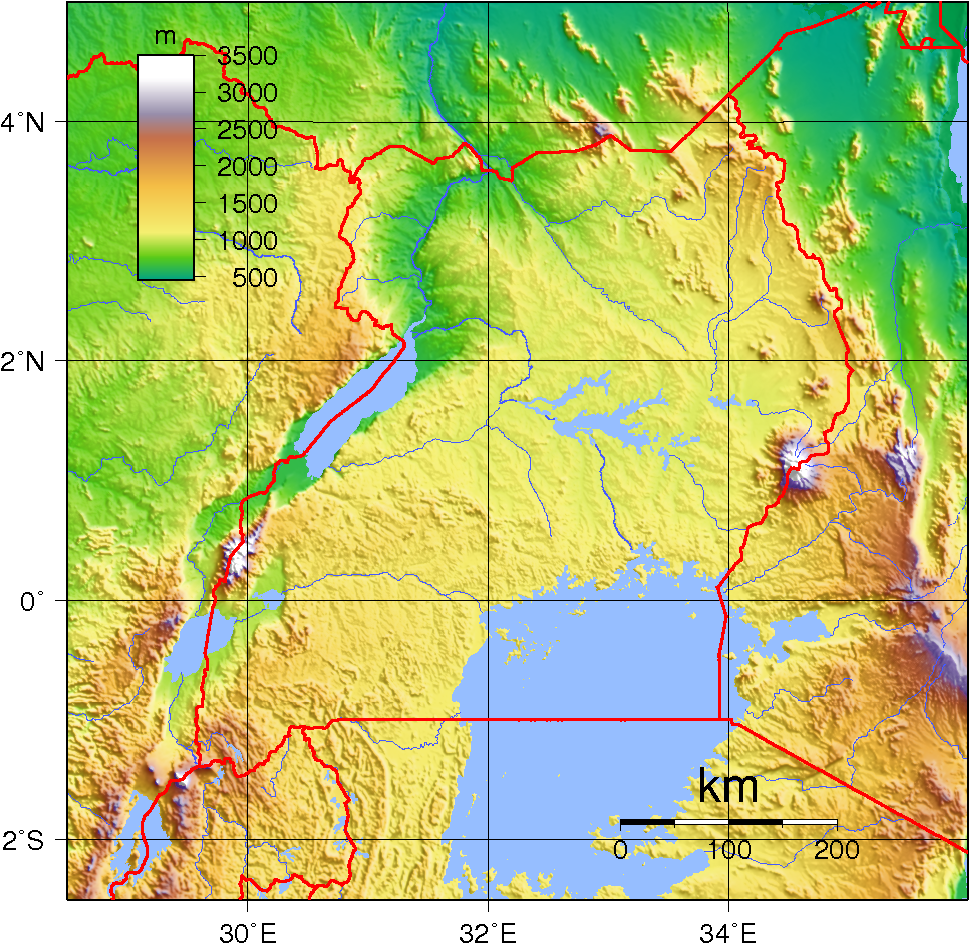

Az ország átlagos tengerszint feletti magassága meghaladja az 1000 métert. Területét a Kelet-afrikai-magasföld szavannával borított tája uralja. A magasföldet nyugaton a Kelet-afrikai-árok tavai és vulkáni hegyláncai zárják le. Az ország déli határa a Föld harmadik legnagyobb területű tava, a Viktória-tó. Az ország csaknem teljes területe a Nílus vízgyűjtő területéhez tartozik. Jelentős a vízzel borított területek nagysága, hiszen az ország ötödét tavak és folyók borítják. A Viktória-Nílus a Viktória-tóból a Kyoga-tóba folyik, majd tovább folytatva útját a kongói határnál az Albert-tóba ömlik, és ezután észak felé tart Szudánba. Az ország keleti részén egy kis terület vizét a Turkwel folyó vezeti el, mely a Turkana-tó vízgyűjtő területének része. A Kyoga-tó etnikai határt is jelent: a nilóták és a bantuk szállásterületét választja szét.
Az alacsonyabban fekvő területeken és az Egyenlítő mentén az éghajlat trópusi. A hőmérséklet alig változik, az átlagos hőingadozás 5 fok az egész évben. Az átlaghőmérséklet igen magas, körülbelül 26 °C. A csapadékmennyiség 1000–2000 mm között változik, ezért a páratartalom is nagyon magas, 90%-os. A csapadék eloszlása azonban nem egyenletes, mivel északon harmadannyi eső esik, mint délen, emiatt északon az állattenyésztés, míg délen a növénytermesztés a jellemző megélhetési forma.
A magasabb területeken (ez az ország döntő többsége) az éghajlat speciális trópusi, de a szavannákéhoz hasonlít leginkább. Ez azt jelenti, hogy csak a csapadékmennyisége hasonlít a trópusi éghajlathoz, ami itt is körülbelül 1000–1500 mm, ezen kívül minden más tényező különbözik attól. Az átlaghőmérséklet körülbelül 21 °C körül van, a hőingadozás nagyobb, 8-10 °C körüli, a páratartalom jóval kisebb, csak 50-60%.
